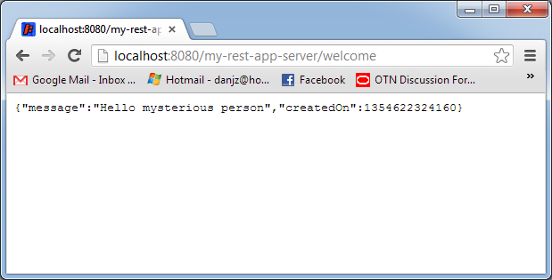
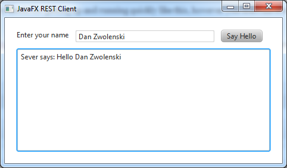
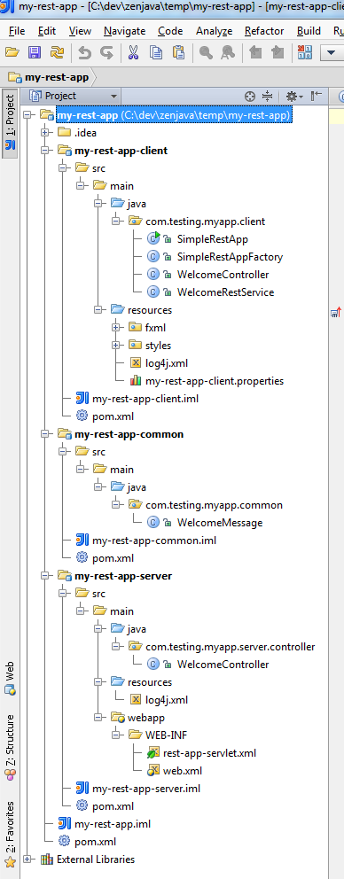

JavaFX Client with REST Server - Quickstart Project
The JavaFX Maven plugin includes a quickstart template for creating a Maven-ready project, with a JavaFX client and a SpringMVC-based server. The client communicates with the server via JSON, using a REST API.
Before starting, make sure you have fixed your classpath
Step 1: generate the project
Run the following Maven command:
mvn archetype:generate
-DarchetypeGroupId=com.zenjava
-DarchetypeArtifactId=javafx-rest-archetype
-DarchetypeVersion=8.1.2.1You will be prompted for some parameters:
- groupId: use your domain, or make one up that describes you (e.g. "com.mycompany")
- artifactId: a name for this application (without spaces) (e.g. "my-rest-app")
- version: the version of your app, leave as default for a new project
- package: the base package to use to put Java classes in. Usually combine your domain with your app name (e.g. "com.mycompany.myrestapp")
- organizationName: the human-friendly name of your organization (e.g. "My Company")
This will create a new directory based on the artifactId you entered. The new project will be a multi-module Maven project, with the following hierarchy:
+ my-rest-app
- pom.xml
+ my-rest-app-client
- pom.xml
+ src
+ main
+ deploy
+ java
+ resources
+ my-rest-app-common
- pom.xml
+ src
+ main
+ java
+ my-rest-app-server
- pom.xml
+ src
+ main
+ java
+ resources
+ webappAs you can see there are three sub-modules: common, client and server.
common: contains classes that are shared between the client and the server. Mainly the data transfer objects (i.e. plain old Java beans) that represent the data that is serialized between client and server. At runtime these will be converted to JSON messages and sent over HTTP, but at a code level, we deal with them as nice, type-safe Java beans and don't need to worry about the JSON conversion.
client this is our JavaFX client. It is not overly different to a normal JavaFX Maven project, except that it it uses Spring and some XML libraries to make REST calls onto our server. SimpleRestApp is the main entry point and this loads Spring configuration via SimpleRestAppFactory. Note that it is not a requirement to use Spring here, you could remove all Spring references and code the REST calls and JSON parsing by hand (but why make it hard?).
server this is a standard SpringMVC webapp and can run in a Tomcat, Jetty, or other Servlet container. The main bit of interest is the WelcomeController, which is configured to handle REST requests and server up JSON. There is nothing JavaFX specific about this module, and the resulting server could just as easily be used with a web or mobile client.
Step 2: build the project
Change directory into your newly generated project:
cd my-rest-app
The build the project using standard Maven commands:
mvn clean install
This will generate a 'target' directory under each of the Maven modules. The server module will contain a WAR file of all the server code and the client module will contain a JAR module of all the client code.
Step 3: start the server
You can start the server from the command line using standard Maven commands. First change directory into the server module:
cd my-rest-app-server
The build the project using standard Maven commands:
mvn jetty:run
You do not have to have Jetty installed, Maven will take care of this for you.
Jetty is very useful for getting up and running quickly like this, however you don’t have to use Jetty. Maven builds a standard WAR file that you can deploy into any JEE web server, such as Tomcat, JBoss, etc.
Your server should now be running. You can test it using a standard web browser to and you should see XML output like:
Step 4: run the client
Open a new command prompt, change directory into the client sub-directory and start your JavaFX client:
cd my-rest-app\my-rest-app-client
Start the JavaFX client using the JavaFX Maven plugin's run command:
mvn jfx:run
When the JavaFX client starts up enter your name and hit the “Say Hello” button. The response from the server will be shown in the text area below:
Step 5: get busy coding
You now have a working skeleton project which you can build upon to create your next awesome JavaFX and REST server application. Since you are using Maven, you can simply open the base level POM file in your favourite IDE and your project will be automatically configured for you with the classpath all setup, etc.
Here’s the links for using Maven with your IDE:
You can now start hacking away at the project code to make it your own. Delete whatever you don't want, add what you do want. There is nothing ZenJava specific in the generated code, it is all standard SpringMVC on the server and JavaFX on the client.
Your project tree should look something like (this is taken from IntelliJ IDEA):
Step 6: distribute your application
When you are ready to distribute your application there are two things you need to distribute: the server and the client.
To distribute your server, you just build a standard WAR file from it using:
mvn clean install
Your WAR file will then be found at 'my-rest-app/my-rest-app-server/target/my-rest-app.war'. This WAR file can then be copied to a Tomcat server (or the servlet container of your choice), making it available over HTTP on the internet.
To distribute your client, you just need to pick one of the distribution options available via the JavaFX Maven Plugin. For example, if you want to use a native installer (recommended), then you change directory into the client module:
cd my-rest-app-client
And from within here, run:
mvn clean jfx:native
The resulting native installer will be built depending on what operating system you are running on. It will be found under the 'my-rest-app/my-rest-app-client/target/jfx/native/bundles' directory.
Note that the URL that the client uses to connect to the REST server in 'src/main/resources/my-rest-app-client.properties'. You should change this URL to match that of your deployed server.